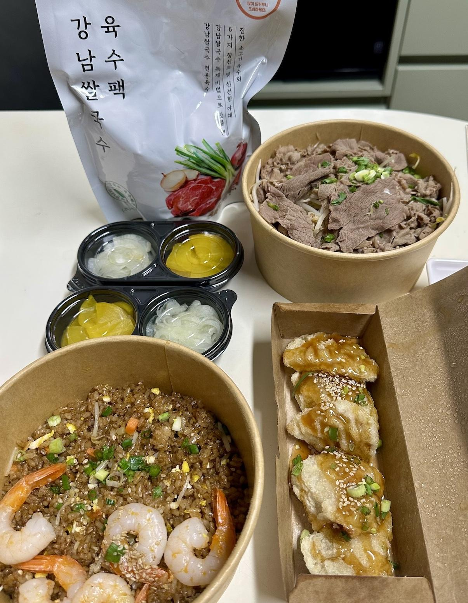

강남쌀국수의 소고기폭탄쌀국수 및 새우볶음밥에 관한 기록
사실 맛집 관련 로그 같은 걸 쓰게 되리라곤 블로그를 운영한 십수년 동안 전혀 생각지 못 했다. 하지만 여러 사유 특히 개인적으로 어떤 식당에 대한 기억이 애매모호해서 다시 시킬 때 고민이 많았던 점이 크게 작용하여 이제부턴 가급적 뭔가를 먹었다면 그에 관한 기록을 남기려고 한다. 참고로 아무런 스폰싱은 없지만 개인적인 목적의 기록이기 때문에 음식점 이름을 가리지 않고 그대로 쓴다.
그 첫 타자는 강남쌀국수의 소고기폭탄쌀국수와 새우볶음밥이고 사이드로 주문한 미니탕수육이다. 배우자와 늘 점심 식사 선정에 관해 "난 몰라 네가 골라"라며 티격태격 싸우는 편인데 이날은 누군가의 입에서 "쌀국수!"가 바로 튀어나오는 바람에 평화로운 점심 식사 메뉴 선정이 되었다. 그리하여 몇 가지 안 중에서 고른 식당이 바로 '강남쌀국수'다. 물론 식당이 가까운 건 아니어서 배달로 주문했다.
자 과연 경기도 촌놈에게 서울 강남이라는 대도시의 맛은 과연 어떤 맛일까?
 강남쌀국수의 소고기폭탄쌀국수와 새우볶음밥
소고기폭탄쌀국수: 사진으로는 많아 보이지만 사실 그렇게 고기가 폭탄 수준으로 부를 정도로 많지는 않았다. 다만 숙주가 충분히 들어있었던 점은 좋았다. 육수가 전용 포장 팩에 들어있었던 점도 특이했다. 육수의 맛은 향신료의 향이 좀 강한 편이었다. 전반적으로 맛은 무난했다. 소스 2종은 당연하게도 제공이 되었다. 어떤 외국인이 직접 운영하는 쌀국수 집에서는 소스를 별도로 사야 했다는 안 좋은(?) 기억이 있는데 다행히도 여긴 한국적(?)이었다.
새우볶음밥: 맛 자체는 나쁘진 않았지만 개인적인 취향과는 좀 거리가 있는 편이었다. 개인적으론 웍에 모든 재료를 넣고 강하게 그리고 불맛도 넣어서 볶아주는 것을 선호하지만 이 집은 철판에서 볶아주는 볶음밥이라 불맛은 없는 편이었다. 그리고 새우 토핑을 같이 볶은 게 아니라 다 볶은 밥 위에 별도로 올린 것처럼 보이는 것도 취향과는 거리가 있었다. 아마도 볶음밥 메뉴는 토핑만 바꾸는 식으로 조합하는 것 같다는 느낌이다.
미니탕수육: 꿔바로우와 탕수육 사이의 그런 느낌이었다. 소스가 좀 텁텁한 편인데 맛 자체는 개인적인 취향과는 거리가 있었다. 먹을 만은 했지만 굳이 돈 더 주고 많이 먹고 싶은 정도는 아니었다.
서비스: 서비스로 온 호박식혜는 맛있었다. 아마도 판매되는 제품이 아니라 직접 담근 것이 아닐까 추정될 정도로 적당히 달았다.
전반적인 평가
역시 강남! 촌놈에겐 뭔가 따라가기 어려운 그런 맛이 있었나보다.
전반적으로 무난한 편이긴 했으나 취향과는 거리가 다소 있었다. 다만 배우자는 취향에 맞았는지 맛있다며 잘 먹었다. 쌀국수는 향신료 향이 좀 있는 편이었지만 거부감은 없는 편이었다. 어쨌든 쌀국수는 다시 시켜 먹을 의향은 있다. 다음에 시키게 된다면 새우볶음밥과 미니탕수육은 다른 것으로 바꿔서 시켜보고 싶다.
가격은 일반적인 편이었다. 2인 세트로 2만 원 중후반대였는데 메뉴 조합에 따라 가격은 좀 달라질 수는 있을 것 같다.
주의할 점으로 독감으로 미각이 이상하게 뒤틀린 상태였었다는 점이 있다. 어쩌면 다음에 먹게 되면 다른 평가를 내릴 지도 모르겠다는 말이다.